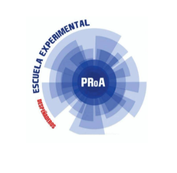

Formación orientada al Desarrollo de Software
La Escuela Experimental PROA Despeñaderos es una institución pública orientada al Desarrollo de Software, que forma estudiantes con pensamiento crítico, habilidades tecnológicas y una preparación integral para los desafíos del mundo actual. Su propuesta educativa combina materias de formación general con programación, inglés aplicado y proyectos tecnológicos.
Espacio de creatividad y expresión artística.
Actividades físicas y participación en competencias.
Investigación, experimentación y proyectos innovadores.
La escuela forma parte del Programa PROA, creado en 2014 por la Provincia de Córdoba para impulsar una educación secundaria innovadora con orientación tecnológica. Comenzó sus actividades en 2019 en un edificio provisorio y, el 27 de junio de 2022, inauguró su sede actual en Despeñaderos. Desde entonces, continúa promoviendo una formación basada en la innovación, el aprendizaje por proyectos y el desarrollo de habilidades para el futuro.